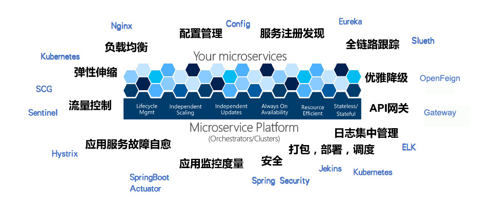
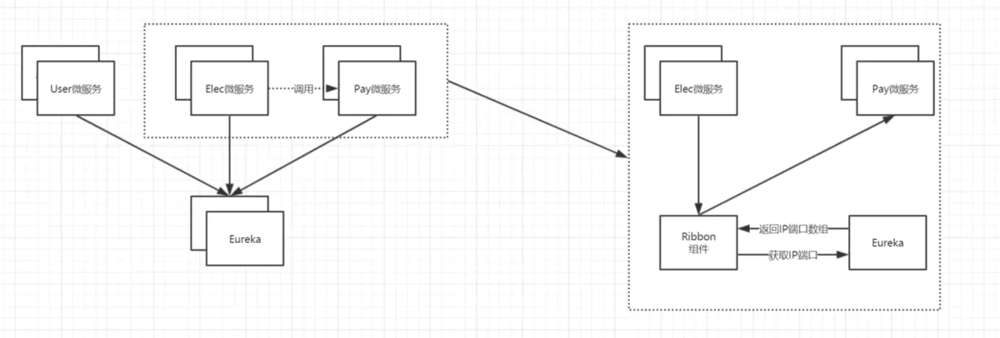

微服务生态
什么是微服务
- 微服务是一种架构风格
- 一系列微小的服务共同组成
- 跑在自己的进程里
- 每个服务为独立的业务开发
- 独立部署
- 独立数据
- 服务间可以是不同语言
微服务的特征
- 单一职责
- 轻量级通讯
- 隔离性
- 有自己的数据
- 技术多样性
SpringCloud核心组件

- Eureka(注册中心)
- hystrix(断路器)
- Gateway(服务网关)
- OpenFeign(负载均衡)
- Config(配置中心)
- sleuth(链路追踪)
Eureka(注册中心)
在分布式系统里，必须要有一个角色对所有微服务的状态、地址、及实例数进行集中管理和收集，并能定期的监控所有微服务的状态，这就是Eureka，能提供服务注册和注册中心功能
两个组件组成
- Eureka Server 注册中心
- Eureka Client 服务注册
OpenFeign(负载均衡)
OpenFeign是SpringCloud微服务套件中的一部分，提供负责均衡、容错、异步和多协议(HTTP,TCP,UDP)支持、缓存、批处理，申明式编程.

Hystrix(断路器)
在一个分布式系统里，许多依赖不可避免的会调用失败，比如超时、异常等，如何能够保证在一个依赖出问题的情况下，不会导致整体服务失败，这个就是Hystrix需要做的事情。Hystrix提供了熔断、隔离、Fallback、cache、监控等功能，能够在一个、或多个依赖同时出现问题时保证系统依然可用。
熔断
当Hystrix Command请求后端服务失败数量超过一定比例(默认50%), 断路器会切换到开路状态(Open). 这时所有请求会直接失败而不会发送到后端服务.
断路器保持在开路状态一段时间后(默认5秒), 自动切换到半开路状态(HALF-OPEN). 这时会判断下一次请求的返回情况,如果请求成功, 断路器切回闭路状态(CLOSED), 否则重新切换到开路状态(OPEN).
Hystrix的断路器就像我们家庭电路中的保险丝, 一旦后端服务不可用, 断路器会直接切断请求链, 避免发送大量无效请求影响系统吞吐量, 并且断路器有自我检测并恢复的能力.
隔离
在Hystrix中, 主要通过线程池来实现资源隔离. 通常在使用的时候我们会根据调用的远程服务划分出多个线程池.
Fallback
Fallback相当于是降级操作. 对于查询操作, 我们可以实现一个fallback方法, 当请求后端服务出现异常的时候, 可以使用fallback方法返回的值. fallback方法的返回值一般是设置的默认值或者来自缓存.告知后面的请求服务不可用了，不要再来了。
cahce
比如一个请求过来请求我userId=1的数据，你后面的请求也过来请求同样的数据，这时我不会继续走原来的那条请求链路了，而是把第一次请求缓存过了，把第一次的请求结果返回给后面的请求。
监控
HyStrix自身提供了监控系统，可以对接口状态进行监控，但是实时性的，没有持久化存储，我们后期是可以用第三方系统监控数据的采集与报警
Gateway(服务网关)
API网关可以提供一个单独且统一的API入口用于访问内部一个或多个API。简单来说嘛就是一个统一入口，比如现在的支付宝或者微信的相关api服务一样，都有一个统一的api地址，统一的请求参数，统一的鉴权。
Gateway的核心一系列的过滤器：
- 身份认证与安全：识别每个资源的验证要求，并拒绝那些与要求不符的请求。
- 审查与监控：在边缘位置追踪有意义的数据和统计结果，从而带来精确的生产视图。
- 动态路由：动态地将请求路由到不同的后端集群。
- 压力测试：逐渐增加指向集群的流量，以了解性能。
- 负载分配：为每一种负载类型分配对应容量，并启用超出限定值的请求。
- 静态响应处理：在边缘位置直接建立部分相应，从而避免其转发到内部集群。
Config(配置中心)
在分布式系统中，由于服务数量巨多，为了方便服务配置文件统一管理，实时更新，所以需要分布式配置中心组件。
- 核心功能
- 提供服务端和客户端支持
- 集中管理各环境的配置文件
- 配置文件修改之后，可以快速的生效
- 可以进行版本管理
- 支持大的并发查询
- 支持各种语言
Sleuth
Spring Cloud Sleuth 为服务之间调用提供链路追踪。通过 Sleuth 可以很清楚的了解到一个服务请求经过了哪些服务，每个服务处理花费了多长。从而让我们可以很方便的理清各微服务间的调用关系。此外 Sleuth 可以帮助我们耗时分析: 通过Sleuth可以很方便的了解到每个采样请求的耗时，从而分析出哪些服务调用比较耗时; 可视化错误: 对于程序未捕捉的异常，可以通过集成 Zipkin 服务界面上看到; 链路优化: 对于调用比较频繁的服务，可以针对这些服务实施一些优化措施。 Spring Cloud Sleuth 可以结合 Zipkin，将信息发送到 Zipkin，利用 Zipkin 的存储来存储信息，利用 Zipkin UI 来展示数据。